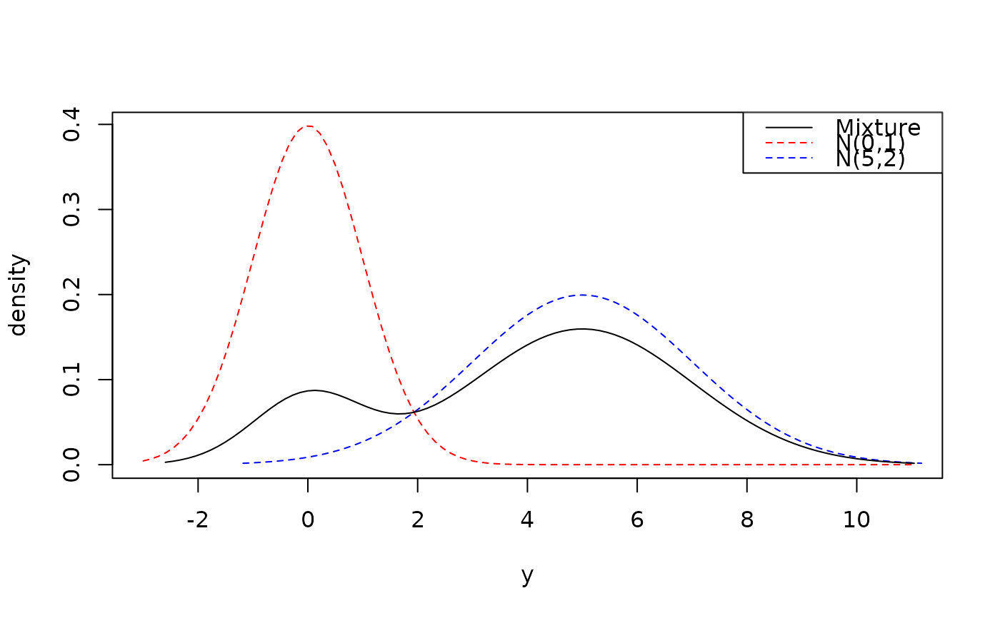

Create a mixture distribution, which can be thought of as an average of multiple distributions (in terms of their CDF, density, PMF, or survival functions, for example). Data drawn from a mixture distribution involves two steps: first randomly selecting the distribution to draw from, followed by the random selection from that distribution.
Arguments
- ...
Distribution objects, or list of distributions.
- weights
Vector of weights corresponding to the distributions; or, single numeric for equal weights. When normalized, they correspond to the probabilities of selecting each distribution.
- na_action_dst, na_action_w
What should be done with null distributions in
...andNAinweights? Character vector of length 1: one of "fail", "null" (default), or "drop". See details.
Details
Distributions in ... and the weights vector are recycled to have the
same length, but only if one of them has length 1
(via vctrs::vec_recycle_common()).
na_action_dst and na_action_w specify the NA action for distributions
and weights. "NA" here means either NA in the weights vector, or
a Null distribution (distionary::dst_null()) in the distributions.
Options are, in order of precedence:
"fail": Throw an error in the presence of NAs."null": Return a Null distribution in the presence of NAs."drop": Remove distribution-weight pairs having an NA value
Examples
library(distionary)
a <- dst_norm(0, 1)
b <- dst_norm(5, 2)
m1 <- mix(a, b, weights = c(1, 4))
plot(a, col = "red", lty = 2, from = -3, to = 11)
plot(b, add = TRUE, col = "blue", lty = 2)
plot(m1, add = TRUE)
legend(
"topright",
legend = c("Mixture", "N(0,1)", "N(5,2)"),
col = c("black", "red", "blue"),
lty = c(1, 2, 2)
)
